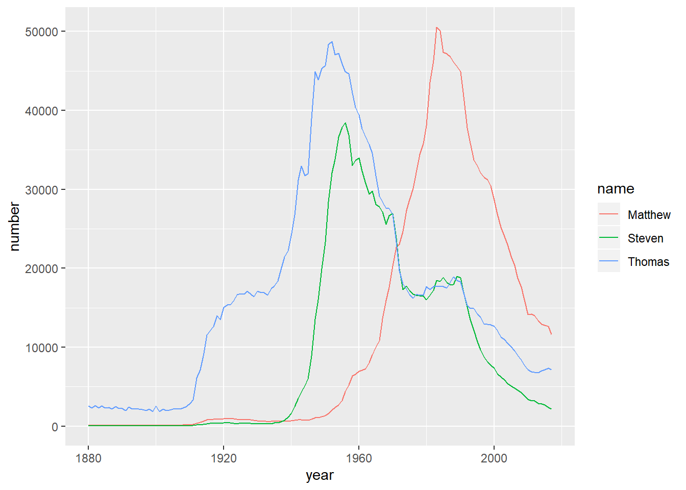
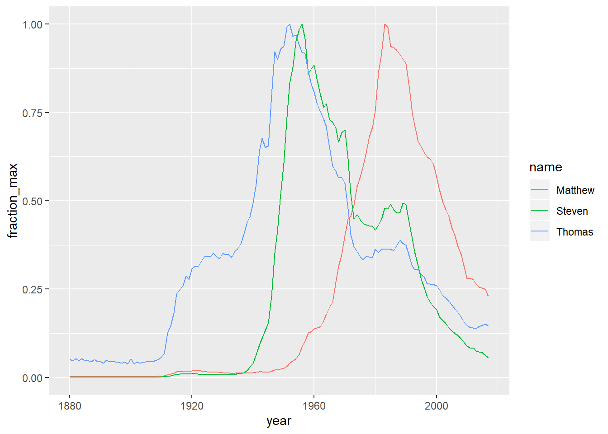
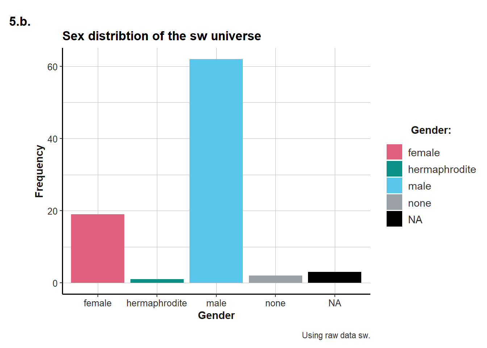

Module 4 Data Manipulation with dplyr
Say you’ve found a great dataset and would like to learn more about it. How can you start to answer the questions you have about the data? You can use dplyr to answer those questions—it can also help with basic transformations of your data. You’ll also learn to aggregate your data and add, remove, or change the variables. Along the way, you’ll explore a dataset containing information about counties in the United States. You’ll finish the course by applying these tools to the babynames dataset to explore trends of baby names in the United States.
4.1 Transforming Data with dplyr
Learn verbs you can use to transform your data, including select, filter, arrange, and mutate. You’ll use these functions to modify the counties dataset to view particular observations and answer questions about the data.
4.1.1 Video: The counties dataset
4.1.2 Question: Understanding your data
4.1.2.1 Load the counties data set and the dplyr package
counties <- read.csv("data_acs2015_county_data.csv")
library("dplyr")Take a look at the counties dataset using the glimpse() function.
glimpse(counties)## Observations: 3,141
## Variables: 40
## $ census_id <int> 1001, 1003, 1005, 1007, 1009, 1011, 10...
## $ state <fct> Alabama, Alabama, Alabama, Alabama, Al...
## $ county <fct> Autauga, Baldwin, Barbour, Bibb, Bloun...
## $ region <fct> South, South, South, South, South, Sou...
## $ metro <fct> , , , , , , , , , , , , , , , , , , , ...
## $ population <int> 55221, 195121, 26932, 22604, 57710, 10...
## $ men <int> 26745, 95314, 14497, 12073, 28512, 566...
## $ women <int> 28476, 99807, 12435, 10531, 29198, 501...
## $ hispanic <dbl> 2.6, 4.5, 4.6, 2.2, 8.6, 4.4, 1.2, 3.5...
## $ white <dbl> 75.8, 83.1, 46.2, 74.5, 87.9, 22.2, 53...
## $ black <dbl> 18.5, 9.5, 46.7, 21.4, 1.5, 70.7, 43.8...
## $ native <dbl> 0.4, 0.6, 0.2, 0.4, 0.3, 1.2, 0.1, 0.2...
## $ asian <dbl> 1.0, 0.7, 0.4, 0.1, 0.1, 0.2, 0.4, 0.9...
## $ pacific <dbl> 0.0, 0.0, 0.0, 0.0, 0.0, 0.0, 0.0, 0.0...
## $ citizens <int> 40725, 147695, 20714, 17495, 42345, 80...
## $ income <int> 51281, 50254, 32964, 38678, 45813, 319...
## $ income_err <int> 2391, 1263, 2973, 3995, 3141, 5884, 17...
## $ income_per_cap <int> 24974, 27317, 16824, 18431, 20532, 175...
## $ income_per_cap_err <int> 1080, 711, 798, 1618, 708, 2055, 714, ...
## $ poverty <dbl> 12.9, 13.4, 26.7, 16.8, 16.7, 24.6, 25...
## $ child_poverty <dbl> 18.6, 19.2, 45.3, 27.9, 27.2, 38.4, 39...
## $ professional <dbl> 33.2, 33.1, 26.8, 21.5, 28.5, 18.8, 27...
## $ service <dbl> 17.0, 17.7, 16.1, 17.9, 14.1, 15.0, 16...
## $ office <dbl> 24.2, 27.1, 23.1, 17.8, 23.9, 19.7, 21...
## $ construction <dbl> 8.6, 10.8, 10.8, 19.0, 13.5, 20.1, 10....
## $ production <dbl> 17.1, 11.2, 23.1, 23.7, 19.9, 26.4, 23...
## $ drive <dbl> 87.5, 84.7, 83.8, 83.2, 84.9, 74.9, 84...
## $ carpool <dbl> 8.8, 8.8, 10.9, 13.5, 11.2, 14.9, 12.4...
## $ transit <dbl> 0.1, 0.1, 0.4, 0.5, 0.4, 0.7, 0.0, 0.2...
## $ walk <dbl> 0.5, 1.0, 1.8, 0.6, 0.9, 5.0, 0.8, 1.2...
## $ other_transp <dbl> 1.3, 1.4, 1.5, 1.5, 0.4, 1.7, 0.6, 1.2...
## $ work_at_home <dbl> 1.8, 3.9, 1.6, 0.7, 2.3, 2.8, 1.7, 2.7...
## $ mean_commute <dbl> 26.5, 26.4, 24.1, 28.8, 34.9, 27.5, 24...
## $ employed <int> 23986, 85953, 8597, 8294, 22189, 3865,...
## $ private_work <dbl> 73.6, 81.5, 71.8, 76.8, 82.0, 79.5, 77...
## $ public_work <dbl> 20.9, 12.3, 20.8, 16.1, 13.5, 15.1, 16...
## $ self_employed <dbl> 5.5, 5.8, 7.3, 6.7, 4.2, 5.4, 6.2, 5.0...
## $ family_work <dbl> 0.0, 0.4, 0.1, 0.4, 0.4, 0.0, 0.2, 0.1...
## $ unemployment <dbl> 7.6, 7.5, 17.6, 8.3, 7.7, 18.0, 10.9, ...
## $ land_area <dbl> 594.44, 1589.78, 884.88, 622.58, 644.7...4.1.3 Selecting columns
Select the following four columns from the counties variable:
statecountypopulationpoverty
You don’t need to save the result to a variable.
4.1.3.1 Select the columns
counties %>%
select(state, county, population, poverty)Recall that if you want to keep the data you’ve selected, you can use assignment to create a new table.
4.1.4 Video: The filter and arrange verbs
4.1.5 Arranging observations
Here you see the counties_selected dataset with a few interesting variables selected. These variables: private_work, public_work, self_employed describe whether people work for the government, for private companies, or for themselves.
In these exercises, you’ll sort these observations to find the most interesting cases.
counties_selected <- counties %>%
select(state, county, population, private_work, public_work, self_employed)4.1.5.1 Add a verb to sort in descending order of public_work
counties_selected %>%
arrange(desc(public_work))We sorted the counties in descending order according to public_work. What if we were interested in looking at observations in counties that have a large population or within a specific state? Let’s take a look at that next!
4.1.6 Filtering for conditions
You use the filter() verb to get only observations that match a particular condition, or match multiple conditions.
counties_selected <- counties %>%
select(state, county, population)4.1.6.1 Filter for counties with a population above 1000000
counties_selected %>%
filter(population > 1000000)4.1.6.2 Filter for counties in the state of California that have a population above 1000000
counties_selected %>%
filter(state == "California",
population > 1000000)## state county population
## 1 California Alameda 1584983
## 2 California Contra Costa 1096068
## 3 California Los Angeles 10038388
## 4 California Orange 3116069
## 5 California Riverside 2298032
## 6 California Sacramento 1465832
## 7 California San Bernardino 2094769
## 8 California San Diego 3223096
## 9 California Santa Clara 1868149Now you know that there are 9 counties in the state of California with a population greater than one million. In the next exercise, you’ll practice filtering and then sorting a dataset to focus on specific observations!
4.1.7 Filtering and arranging
We’re often interested in both filtering and sorting a dataset, to focus on observations of particular interest to you. Here, you’ll find counties that are extreme examples of what fraction of the population works in the private sector.
counties_selected <- counties %>%
select(state, county, population, private_work, public_work, self_employed)4.1.7.1 Filter for Texas and more than 10000 people; sort in descending order of private_work
counties_selected %>%
filter(state == "Texas", population > 10000) %>%
arrange(desc(private_work))## state county population private_work public_work
## 1 Texas Gregg 123178 84.7 9.8
## 2 Texas Collin 862215 84.1 10.0
## 3 Texas Dallas 2485003 83.9 9.5
## 4 Texas Harris 4356362 83.4 10.1
## 5 Texas Andrews 16775 83.1 9.6
## 6 Texas Tarrant 1914526 83.1 11.4
## 7 Texas Titus 32553 82.5 10.0
## 8 Texas Denton 731851 82.2 11.9
## 9 Texas Ector 149557 82.0 11.2
## 10 Texas Moore 22281 82.0 11.7
## 11 Texas Jefferson 252872 81.9 13.4
## 12 Texas Fort Bend 658331 81.7 12.5
## 13 Texas Panola 23900 81.5 11.7
## 14 Texas Midland 151290 81.2 11.4
## 15 Texas Potter 122352 81.2 12.4
## 16 Texas Frio 18168 81.1 15.4
## 17 Texas Johnson 155450 80.9 13.3
## 18 Texas Smith 217552 80.9 12.7
## 19 Texas Orange 83217 80.8 13.7
## 20 Texas Harrison 66417 80.6 13.9
## 21 Texas Brazoria 331741 80.5 14.4
## 22 Texas Calhoun 21666 80.5 12.8
## 23 Texas Austin 28886 80.4 11.8
## 24 Texas Montgomery 502586 80.4 11.7
## 25 Texas Jim Wells 41461 80.3 12.6
## 26 Texas Hutchinson 21858 80.2 13.9
## 27 Texas Ochiltree 10642 80.1 10.4
## 28 Texas Victoria 90099 80.1 12.5
## 29 Texas Hardin 55375 80.0 15.7
## 30 Texas Bexar 1825502 79.6 14.8
## 31 Texas Gray 22983 79.6 13.3
## 32 Texas McLennan 241505 79.5 14.7
## 33 Texas Newton 14231 79.4 15.8
## 34 Texas Ward 11225 79.3 15.0
## 35 Texas Grimes 26961 79.2 15.0
## 36 Texas Lamar 49566 79.2 13.9
## 37 Texas Rusk 53457 79.2 12.8
## 38 Texas Wharton 41264 78.9 12.3
## 39 Texas Williamson 473592 78.9 14.9
## 40 Texas Marion 10248 78.7 15.2
## 41 Texas Hood 53171 78.6 11.0
## 42 Texas Hunt 88052 78.6 14.4
## 43 Texas Ellis 157058 78.5 14.2
## 44 Texas Upshur 40096 78.5 13.0
## 45 Texas Grayson 122780 78.4 13.8
## 46 Texas Liberty 77486 78.4 13.6
## 47 Texas Atascosa 47050 78.1 14.3
## 48 Texas Waller 45847 78.1 16.3
## 49 Texas Deaf Smith 19245 78.0 13.6
## 50 Texas Chambers 37251 77.9 15.9
## 51 Texas Jasper 35768 77.7 15.5
## 52 Texas Scurry 17238 77.7 16.2
## 53 Texas Parmer 10004 77.6 12.5
## 54 Texas San Patricio 66070 77.6 17.9
## 55 Texas Taylor 134435 77.5 16.5
## 56 Texas Fayette 24849 77.4 13.4
## 57 Texas Kaufman 109289 77.4 16.7
## 58 Texas Matagorda 36598 77.4 15.6
## 59 Texas Comal 119632 77.2 13.2
## 60 Texas Gonzales 20172 77.2 13.2
## 61 Texas Hill 34923 77.1 15.0
## 62 Texas Hockley 23322 77.1 15.6
## 63 Texas Guadalupe 143460 77.0 17.9
## 64 Texas Cooke 38761 76.9 14.8
## 65 Texas Rockwall 85536 76.9 16.2
## 66 Texas Wise 61243 76.9 14.9
## 67 Texas Gaines 18916 76.8 12.0
## 68 Texas Tom Green 115056 76.8 16.5
## 69 Texas Erath 40039 76.7 15.3
## 70 Texas Hopkins 35645 76.7 13.2
## 71 Texas Palo Pinto 27921 76.7 14.1
## 72 Texas Nueces 352060 76.6 16.3
## 73 Texas Parker 121418 76.6 15.2
## 74 Texas Lubbock 290782 76.5 16.8
## 75 Texas Travis 1121645 76.5 16.0
## 76 Texas Eastland 18328 76.4 15.1
## 77 Texas Montague 19478 76.4 13.3
## 78 Texas Angelina 87748 76.2 17.8
## 79 Texas Jackson 14486 76.1 13.6
## 80 Texas Nolan 15061 76.1 17.1
## 81 Texas Cass 30328 76.0 15.9
## 82 Texas Duval 11577 76.0 17.2
## 83 Texas Hale 35504 75.9 16.4
## 84 Texas Galveston 308163 75.8 18.2
## 85 Texas Bosque 17971 75.7 12.8
## 86 Texas Henderson 79016 75.6 13.9
## 87 Texas Bowie 93155 75.5 19.4
## 88 Texas Aransas 24292 75.4 12.4
## 89 Texas Randall 126782 75.4 17.5
## 90 Texas Morris 12700 75.3 17.5
## 91 Texas Rains 11037 75.3 15.6
## 92 Texas Shelby 25725 75.3 16.8
## 93 Texas Brown 37833 75.2 16.5
## 94 Texas Sabine 10440 75.1 18.1
## 95 Texas Wood 42712 75.0 15.6
## 96 Texas Gillespie 25398 74.8 10.5
## 97 Texas Navarro 48118 74.8 17.3
## 98 Texas Caldwell 39347 74.7 18.6
## 99 Texas Tyler 21462 74.6 19.8
## 100 Texas Webb 263251 74.6 19.4
## 101 Texas Wichita 131957 74.6 19.2
## 102 Texas Lee 16664 74.5 16.7
## 103 Texas Burnet 44144 74.1 14.2
## 104 Texas El Paso 831095 73.9 20.0
## 105 Texas Kendall 37361 73.9 15.7
## 106 Texas Lamb 13742 73.8 16.1
## 107 Texas Camp 12516 73.7 16.0
## 108 Texas Freestone 19586 73.6 19.0
## 109 Texas Medina 47392 73.6 17.3
## 110 Texas Washington 34236 73.6 18.1
## 111 Texas Hays 177562 73.5 19.4
## 112 Texas Live Oak 11873 73.5 14.2
## 113 Texas Lavaca 19549 73.4 14.4
## 114 Texas Zapata 14308 73.3 18.1
## 115 Texas Fannin 33748 73.1 19.8
## 116 Texas Young 18329 73.1 15.7
## 117 Texas Cherokee 51167 72.9 20.4
## 118 Texas Kerr 50149 72.8 16.7
## 119 Texas Cameron 417947 72.7 18.2
## 120 Texas Colorado 20757 72.6 17.3
## 121 Texas Clay 10479 72.4 17.0
## 122 Texas DeWitt 20540 72.4 17.7
## 123 Texas Franklin 10599 72.3 13.7
## 124 Texas Comanche 13623 72.2 15.0
## 125 Texas Howard 36105 72.0 23.0
## 126 Texas Llano 19323 72.0 11.4
## 127 Texas Nacogdoches 65531 72.0 20.0
## 128 Texas Wilson 45509 71.8 20.6
## 129 Texas Van Zandt 52736 71.6 16.8
## 130 Texas Bastrop 76948 71.3 20.1
## 131 Texas Callahan 13532 71.2 17.0
## 132 Texas Falls 17410 70.8 20.5
## 133 Texas Hidalgo 819217 70.7 17.2
## 134 Texas Bee 32659 70.5 22.7
## 135 Texas Dimmit 10682 70.5 21.9
## 136 Texas Blanco 10723 70.4 17.5
## 137 Texas Zavala 12060 70.4 23.8
## 138 Texas Terry 12687 70.2 19.7
## 139 Texas Anderson 57915 69.8 23.6
## 140 Texas Robertson 16532 69.8 22.4
## 141 Texas Karnes 14879 69.6 22.0
## 142 Texas Kleberg 32029 69.5 25.9
## 143 Texas Burleson 17293 69.4 21.7
## 144 Texas Leon 16819 69.4 14.5
## 145 Texas Bandera 20796 69.2 19.0
## 146 Texas Bell 326041 69.2 25.7
## 147 Texas San Jacinto 27023 69.1 23.0
## 148 Texas Maverick 56548 68.8 25.0
## 149 Texas Trinity 14405 68.8 17.8
## 150 Texas Jones 19978 68.7 20.5
## 151 Texas Polk 46113 68.7 22.2
## 152 Texas Pecos 15807 68.6 24.5
## 153 Texas Dawson 13542 68.5 21.9
## 154 Texas Milam 24344 68.5 21.3
## 155 Texas Red River 12567 68.5 17.4
## 156 Texas Brazos 205271 68.3 25.6
## 157 Texas Starr 62648 68.2 22.5
## 158 Texas Houston 22949 67.8 22.1
## 159 Texas Reeves 14179 67.8 28.3
## 160 Texas Runnels 10445 67.7 19.9
## 161 Texas Willacy 22002 66.9 23.9
## 162 Texas Uvalde 26952 66.8 23.8
## 163 Texas Wilbarger 13158 66.0 29.6
## 164 Texas Val Verde 48980 65.9 28.9
## 165 Texas Lampasas 20219 65.5 26.5
## 166 Texas Madison 13838 65.1 22.4
## self_employed
## 1 5.4
## 2 5.8
## 3 6.4
## 4 6.3
## 5 6.8
## 6 5.4
## 7 7.4
## 8 5.7
## 9 6.7
## 10 5.9
## 11 4.5
## 12 5.7
## 13 6.9
## 14 7.1
## 15 6.2
## 16 3.4
## 17 5.7
## 18 6.3
## 19 5.4
## 20 5.4
## 21 5.0
## 22 6.7
## 23 7.7
## 24 7.8
## 25 7.1
## 26 5.8
## 27 9.2
## 28 7.1
## 29 4.2
## 30 5.6
## 31 7.0
## 32 5.7
## 33 4.8
## 34 5.3
## 35 5.7
## 36 6.7
## 37 7.9
## 38 8.6
## 39 6.0
## 40 5.9
## 41 9.9
## 42 7.0
## 43 7.3
## 44 8.3
## 45 7.5
## 46 7.8
## 47 7.5
## 48 5.6
## 49 7.9
## 50 6.1
## 51 6.7
## 52 6.0
## 53 9.3
## 54 4.4
## 55 5.7
## 56 9.0
## 57 5.8
## 58 7.0
## 59 9.1
## 60 9.1
## 61 7.6
## 62 7.1
## 63 4.8
## 64 8.1
## 65 6.7
## 66 8.1
## 67 11.2
## 68 6.6
## 69 7.9
## 70 9.8
## 71 9.0
## 72 6.9
## 73 8.0
## 74 6.5
## 75 7.4
## 76 7.8
## 77 9.9
## 78 5.9
## 79 9.3
## 80 6.5
## 81 8.1
## 82 6.4
## 83 7.4
## 84 5.8
## 85 11.2
## 86 10.4
## 87 5.1
## 88 12.2
## 89 7.1
## 90 7.1
## 91 9.0
## 92 7.8
## 93 8.2
## 94 6.8
## 95 9.0
## 96 14.3
## 97 7.8
## 98 6.7
## 99 5.3
## 100 5.8
## 101 6.0
## 102 8.4
## 103 11.7
## 104 6.0
## 105 10.4
## 106 9.9
## 107 9.9
## 108 7.3
## 109 9.0
## 110 8.3
## 111 7.0
## 112 12.1
## 113 12.1
## 114 8.7
## 115 7.1
## 116 10.8
## 117 6.5
## 118 10.4
## 119 8.9
## 120 9.0
## 121 10.4
## 122 9.6
## 123 13.3
## 124 12.3
## 125 4.9
## 126 16.4
## 127 7.9
## 128 7.6
## 129 11.1
## 130 8.3
## 131 9.4
## 132 8.4
## 133 11.9
## 134 6.7
## 135 7.6
## 136 11.8
## 137 5.6
## 138 9.8
## 139 6.4
## 140 7.6
## 141 7.8
## 142 4.4
## 143 8.4
## 144 15.7
## 145 11.6
## 146 5.0
## 147 7.6
## 148 6.1
## 149 12.1
## 150 10.3
## 151 8.7
## 152 6.0
## 153 9.5
## 154 9.8
## 155 13.8
## 156 5.8
## 157 8.6
## 158 9.8
## 159 3.9
## 160 12.1
## 161 9.1
## 162 9.4
## 163 4.4
## 164 5.1
## 165 8.0
## 166 11.8
## [ reached getOption("max.print") -- omitted 3 rows ]You’ve learned how to filter and sort a dataset to answer questions about the data. Notice that you only need to slightly modify your code if you are interested in sorting the observations by a different column.
4.1.8 Video: Mutate
4.1.9 Calculating the number of government employees
In the video, you used the unemployment variable, which is a percentage, to calculate the number of unemployed people in each county. In this exercise, you’ll do the same with another percentage variable: public_work.
The code provided already selects the state, county, population, and public_work columns.
counties_selected <- counties %>%
select(state, county, population, public_work)4.1.9.1 Sort in descending order of the public_workers column
counties_selected %>%
mutate(public_workers = public_work * population / 100) %>%
arrange(desc(public_workers))It looks like Los Angeles is the county with the most government employees.
4.1.10 Calculating the percentage of women in a county
The dataset includes columns for the total number (not percentage) of men and women in each county. You could use this, along with the population variable, to compute the fraction of men (or women) within each county.
In this exercise, you’ll select the relevant columns yourself.
4.1.10.1 Select the columns state, county, population, men, and women
counties_selected <- counties %>%
select(state, county, population, men, women)4.1.10.2 Calculate proportion_women as the fraction of the population made up of women
counties_selected %>%
mutate(proportion_women = women / population)Notice that the proportion_women variable was added as a column to the counties_selected dataset, and the data now has 6 columns instead of 5.
4.1.11 Select, mutate, filter, and arrange
In this exercise, you’ll put together everything you’ve learned in this chapter (select(), mutate(), filter() and arrange()), to find the counties with the highest proportion of men.
counties %>%
# Select the five columns
select(state, county, population, men, women) %>%
# Add the proportion_men variable
mutate(proportion_men = men / population) %>%
# Filter for population of at least 10,000
filter(population >= 10000) %>%
# Arrange proportion of men in descending order
arrange(desc(proportion_men)) ## state county population men
## 1 Virginia Sussex 11864 8130
## 2 California Lassen 32645 21818
## 3 Georgia Chattahoochee 11914 7940
## 4 Louisiana West Feliciana 15415 10228
## 5 Florida Union 15191 9830
## 6 Texas Jones 19978 12652
## 7 Missouri DeKalb 12782 8080
## 8 Texas Madison 13838 8648
## 9 Virginia Greensville 11760 7303
## 10 Texas Anderson 57915 35469
## 11 Arkansas Lincoln 14062 8596
## 12 Texas Bee 32659 19722
## 13 Florida Hamilton 14395 8671
## 14 Illinois Lawrence 16665 9997
## 15 Mississippi Tallahatchie 14959 8907
## 16 Mississippi Greene 14129 8409
## 17 Texas Karnes 14879 8799
## 18 Texas Frio 18168 10723
## 19 Florida Gulf 15785 9235
## 20 Florida Franklin 11628 6800
## 21 Texas Walker 69330 40484
## 22 Georgia Telfair 16416 9502
## 23 Colorado Fremont 46809 27003
## 24 Louisiana Allen 25653 14784
## 25 Ohio Noble 14508 8359
## 26 Georgia Tattnall 25302 14529
## 27 Louisiana Claiborne 16639 9524
## 28 Texas Pecos 15807 9003
## 29 Missouri Pulaski 53443 30390
## 30 Texas Howard 36105 20496
## 31 Illinois Johnson 12829 7267
## 32 Texas Dawson 13542 7670
## 33 Florida DeSoto 34957 19756
## 34 Texas Reeves 14179 8004
## 35 Florida Taylor 22685 12781
## 36 Tennessee Bledsoe 13686 7677
## 37 Louisiana Grant 22362 12523
## 38 Florida Wakulla 31128 17366
## 39 Tennessee Morgan 21794 12150
## 40 Kentucky Morgan 13428 7477
## 41 Florida Bradford 27223 15150
## 42 California Kings 150998 83958
## 43 Kentucky Martin 12631 7020
## 44 Virginia Buckingham 17068 9476
## 45 California Del Norte 27788 15418
## 46 Missouri Pike 18517 10273
## 47 Florida Jackson 48900 27124
## 48 Mississippi Yazoo 27911 15460
## 49 Florida Glades 13272 7319
## 50 New York Franklin 51280 28253
## 51 Pennsylvania Union 44958 24755
## 52 Tennessee Wayne 16897 9295
## 53 Colorado Summit 28940 15912
## 54 Texas Grimes 26961 14823
## 55 Georgia Macon 14045 7720
## 56 Ohio Madison 43456 23851
## 57 Arkansas St. Francis 27345 14996
## 58 Michigan Chippewa 38586 21156
## 59 Kentucky McCreary 18001 9863
## 60 Florida Washington 24629 13478
## 61 Virginia Prince George 37380 20440
## 62 Florida Calhoun 14615 7991
## 63 North Carolina Avery 17695 9673
## 64 Indiana Sullivan 21111 11540
## 65 Oregon Malheur 30551 16697
## 66 Wyoming Carbon 15739 8592
## 67 Maryland Somerset 25980 14150
## 68 Tennessee Hardeman 26253 14297
## 69 Florida Dixie 16091 8746
## 70 Florida Hardee 27468 14920
## 71 Texas Willacy 22002 11947
## 72 North Dakota Williams 29619 16066
## 73 Colorado Logan 21928 11889
## 74 Michigan Houghton 36660 19876
## 75 Texas Tyler 21462 11629
## 76 North Carolina Onslow 183753 99526
## 77 New York Wyoming 41446 22442
## 78 Illinois Randolph 33069 17902
## 79 California Amador 36995 20012
## 80 Texas Live Oak 11873 6421
## 81 Michigan Gogebic 15824 8556
## 82 Oklahoma Hughes 13785 7450
## 83 Texas Scurry 17238 9312
## 84 Georgia Dooly 14293 7717
## 85 Wisconsin Adams 20451 11033
## 86 Florida Okeechobee 39255 21176
## 87 North Carolina Greene 21328 11499
## 88 Missouri St. Francois 66010 35586
## 89 Texas Terry 12687 6835
## 90 Colorado Gunnison 15651 8427
## 91 Missouri Mississippi 14208 7650
## 92 Alabama Barbour 26932 14497
## 93 Indiana Miami 36211 19482
## 94 South Carolina Edgefield 26466 14234
## 95 Oklahoma Okfuskee 12248 6585
## 96 Virginia Powhatan 28207 15159
## 97 Louisiana East Feliciana 19855 10666
## 98 Oklahoma Beckham 23300 12515
## 99 Texas Polk 46113 24757
## 100 Wisconsin Jackson 20543 11022
## 101 Alaska Fairbanks North Star Borough 99705 53477
## 102 Indiana Perry 19414 10407
## 103 Arizona Graham 37407 20049
## 104 Kentucky Clay 21300 11415
## 105 Tennessee Johnson 18017 9643
## 106 Colorado Chaffee 18309 9798
## 107 Louisiana Catahoula 10247 5483
## 108 Georgia Charlton 13130 7024
## 109 Florida Holmes 19635 10501
## 110 Alaska Kodiak Island Borough 13973 7468
## 111 Kansas Leavenworth 78227 41806
## 112 Alabama Bibb 22604 12073
## 113 Minnesota Pine 29218 15605
## 114 Colorado Grand 14411 7689
## 115 South Carolina Marlboro 27993 14930
## 116 Kansas Riley 75022 40002
## 117 Texas Gray 22983 12253
## 118 Texas Houston 22949 12227
## 119 Oklahoma Woodward 20986 11172
## 120 Ohio Marion 65943 35022
## 121 Georgia Butts 23445 12451
## 122 Pennsylvania Wayne 51642 27420
## 123 Illinois Perry 21810 11572
## 124 Michigan Gratiot 41878 22213
## 125 Colorado Eagle 52576 27887
## 126 Indiana Putnam 37650 19967
## 127 Missouri Cooper 17593 9328
## 128 Colorado Pitkin 17420 9235
## 129 Wyoming Goshen 13544 7180
## 130 Alabama Bullock 10678 5660
## 131 Florida Jefferson 14198 7522
## 132 Florida Hendry 38363 20318
## 133 Virginia Nottoway 15711 8320
## 134 Georgia Dodge 21180 11215
## 135 Massachusetts Nantucket 10556 5589
## 136 Michigan Ionia 64064 33917
## 137 Wyoming Sublette 10117 5353
## 138 Wisconsin Juneau 26494 14018
## 139 Florida Monroe 75901 40159
## 140 Pennsylvania Huntingdon 45906 24284
## 141 Illinois Lee 35027 18524
## 142 Louisiana Winn 14855 7851
## 143 Ohio Pickaway 56515 29866
## 144 Kentucky Oldham 63037 33307
## 145 Texas Fannin 33748 17810
## 146 New York Seneca 35144 18527
## 147 Texas Rusk 53457 28172
## 148 Florida Madison 18729 9869
## 149 Colorado Park 16189 8525
## 150 Florida Gilchrist 16992 8946
## 151 Florida Baker 27135 14277
## 152 Alaska Bethel Census Area 17776 9351
## 153 Virginia Manassas Park city 15625 8219
## 154 Nevada Humboldt 17067 8971
## 155 Wisconsin Waushara 24321 12783
## 156 Texas DeWitt 20540 10795
## 157 Oklahoma Atoka 13906 7307
## 158 Idaho Idaho 16312 8571
## 159 Ohio Ross 77334 40627
## 160 Oklahoma Texas 21588 11340
## 161 Utah Sanpete 28261 14845
## 162 Illinois Fayette 22136 11622
## 163 Tennessee Hickman 24283 12745
## 164 Virginia Southampton 18410 9661
## 165 Virginia Brunswick 16930 8882
## 166 Virginia Lunenburg 12558 6588
## women proportion_men
## 1 3734 0.6852664
## 2 10827 0.6683412
## 3 3974 0.6664428
## 4 5187 0.6635096
## 5 5361 0.6470937
## 6 7326 0.6332966
## 7 4702 0.6321389
## 8 5190 0.6249458
## 9 4457 0.6210034
## 10 22446 0.6124320
## 11 5466 0.6112928
## 12 12937 0.6038764
## 13 5724 0.6023619
## 14 6668 0.5998800
## 15 6052 0.5954275
## 16 5720 0.5951589
## 17 6080 0.5913704
## 18 7445 0.5902136
## 19 6550 0.5850491
## 20 4828 0.5847953
## 21 28846 0.5839319
## 22 6914 0.5788255
## 23 19806 0.5768762
## 24 10869 0.5763069
## 25 6149 0.5761649
## 26 10773 0.5742234
## 27 7115 0.5723902
## 28 6804 0.5695578
## 29 23053 0.5686432
## 30 15609 0.5676776
## 31 5562 0.5664510
## 32 5872 0.5663861
## 33 15201 0.5651515
## 34 6175 0.5644968
## 35 9904 0.5634119
## 36 6009 0.5609382
## 37 9839 0.5600125
## 38 13762 0.5578900
## 39 9644 0.5574929
## 40 5951 0.5568216
## 41 12073 0.5565147
## 42 67040 0.5560206
## 43 5611 0.5557755
## 44 7592 0.5551910
## 45 12370 0.5548438
## 46 8244 0.5547875
## 47 21776 0.5546830
## 48 12451 0.5539035
## 49 5953 0.5514617
## 50 23027 0.5509555
## 51 20203 0.5506250
## 52 7602 0.5500977
## 53 13028 0.5498272
## 54 12138 0.5497941
## 55 6325 0.5496618
## 56 19605 0.5488540
## 57 12349 0.5484001
## 58 17430 0.5482818
## 59 8138 0.5479140
## 60 11151 0.5472411
## 61 16940 0.5468165
## 62 6624 0.5467670
## 63 8022 0.5466516
## 64 9571 0.5466345
## 65 13854 0.5465288
## 66 7147 0.5459051
## 67 11830 0.5446497
## 68 11956 0.5445854
## 69 7345 0.5435337
## 70 12548 0.5431775
## 71 10055 0.5429961
## 72 13553 0.5424221
## 73 10039 0.5421835
## 74 16784 0.5421713
## 75 9833 0.5418414
## 76 84227 0.5416293
## 77 19004 0.5414757
## 78 15167 0.5413529
## 79 16983 0.5409380
## 80 5452 0.5408069
## 81 7268 0.5406977
## 82 6335 0.5404425
## 83 7926 0.5402019
## 84 6576 0.5399146
## 85 9418 0.5394846
## 86 18079 0.5394472
## 87 9829 0.5391504
## 88 30424 0.5391001
## 89 5852 0.5387404
## 90 7224 0.5384320
## 91 6558 0.5384291
## 92 12435 0.5382816
## 93 16729 0.5380133
## 94 12232 0.5378221
## 95 5663 0.5376388
## 96 13048 0.5374198
## 97 9189 0.5371947
## 98 10785 0.5371245
## 99 21356 0.5368768
## 100 9521 0.5365331
## 101 46228 0.5363522
## 102 9007 0.5360565
## 103 17358 0.5359692
## 104 9885 0.5359155
## 105 8374 0.5352167
## 106 8511 0.5351466
## 107 4764 0.5350834
## 108 6106 0.5349581
## 109 9134 0.5348103
## 110 6505 0.5344593
## 111 36421 0.5344191
## 112 10531 0.5341090
## 113 13613 0.5340886
## 114 6722 0.5335508
## 115 13063 0.5333476
## 116 35020 0.5332036
## 117 10730 0.5331332
## 118 10722 0.5327901
## 119 9814 0.5323549
## 120 30921 0.5310950
## 121 10994 0.5310727
## 122 24222 0.5309632
## 123 10238 0.5305823
## 124 19665 0.5304217
## 125 24689 0.5304131
## 126 17683 0.5303320
## 127 8265 0.5302109
## 128 8185 0.5301378
## 129 6364 0.5301240
## 130 5018 0.5300618
## 131 6676 0.5297929
## 132 18045 0.5296249
## 133 7391 0.5295653
## 134 9965 0.5295090
## 135 4967 0.5294619
## 136 30147 0.5294237
## 137 4764 0.5291094
## 138 12476 0.5291009
## 139 35742 0.5290971
## 140 21622 0.5289940
## 141 16503 0.5288492
## 142 7004 0.5285089
## 143 26649 0.5284615
## 144 29730 0.5283722
## 145 15938 0.5277350
## 146 16617 0.5271739
## 147 25285 0.5270030
## 148 8860 0.5269368
## 149 7664 0.5265921
## 150 8046 0.5264831
## 151 12858 0.5261470
## 152 8425 0.5260464
## 153 7406 0.5260160
## 154 8096 0.5256343
## 155 11538 0.5255952
## 156 9745 0.5255599
## 157 6599 0.5254566
## 158 7741 0.5254414
## 159 36707 0.5253446
## 160 10248 0.5252918
## 161 13416 0.5252822
## 162 10514 0.5250271
## 163 11538 0.5248528
## 164 8749 0.5247691
## 165 8048 0.5246308
## 166 5970 0.5246058
## [ reached getOption("max.print") -- omitted 2272 rows ]Notice Sussex County in Virginia is more than two thirds male: this is because of two men’s prisons in the county.
4.2 Aggregating Data
Now that you know how to transform your data, you’ll want to know more about how to aggregate your data to make it more interpretable. You’ll learn a number of functions you can use to take many observations in your data and summarize them, including count, group_by, summarize, ungroup, and top_n.
4.2.1 Video: The count verb
4.2.2 Counting by region
The counties dataset contains columns for region, state, population, and the number of citizens, which we selected and saved as the counties_selected table. In this exercise, you’ll focus on the region column.
counties_selected <- counties %>%
select(region, state, population, citizens)4.2.2.1 Use count to find the number of counties in each region
counties_selected %>%
count(region, sort=TRUE)## # A tibble: 4 x 2
## region n
## <fct> <int>
## 1 South 1420
## 2 North Central 1055
## 3 West 448
## 4 Northeast 218Since the results have been arranged, you can see that the South has the greatest number of counties.
4.2.3 Counting citizens by state
You can weigh your count by particular variables rather than finding the number of counties. In this case, you’ll find the number of citizens in each state.
counties_selected <- counties %>%
select(region, state, population, citizens)4.2.3.1 Find number of counties per state, weighted by citizens
counties_selected %>%
count(state, wt=citizens, sort=TRUE)## # A tibble: 50 x 2
## state n
## <fct> <int>
## 1 California 24280349
## 2 Texas 16864962
## 3 Florida 13933052
## 4 New York 13531404
## 5 Pennsylvania 9710416
## 6 Illinois 8979999
## 7 Ohio 8709050
## 8 Michigan 7380136
## 9 North Carolina 7107998
## 10 Georgia 6978660
## # ... with 40 more rowsFrom our result, we can see that California is the state with the most citizens.
4.2.4 Mutating and counting
You can combine multiple verbs together to answer increasingly complicated questions of your data. For example: “What are the US states where the most people walk to work?”
You’ll use the walk column, which offers a percentage of people in each county that walk to work, to add a new column and count based on it.
counties_selected <- counties %>%
select(state, population, walk)counties_selected %>%
# Add population_walk containing the total number of people who walk to work
mutate(population_walk = population * walk / 100) %>%
# Count weighted by the new column
count(state, wt = population_walk, sort=TRUE)## # A tibble: 50 x 2
## state n
## <fct> <dbl>
## 1 New York 1237938.
## 2 California 1017964.
## 3 Pennsylvania 505397.
## 4 Texas 430793.
## 5 Illinois 400346.
## 6 Massachusetts 316765.
## 7 Florida 284723.
## 8 New Jersey 273047.
## 9 Ohio 266911.
## 10 Washington 239764.
## # ... with 40 more rowsWe can see that while California had the largest total population, New York state has the largest number of people who walk to work.
4.2.5 Video: The group by, summarize and ungroup verbs
4.2.5.1 Summarizing
The summarize() verb is very useful for collapsing a large dataset into a single observation.
counties_selected <- counties %>%
select(county, population, income, unemployment)4.2.5.2 Summarize to find minimum population, maximum unemployment, and average income
counties_selected %>%
summarise(min_population = min(population), max_unemployment = max(unemployment), average_income = mean(income))## min_population max_unemployment average_income
## 1 85 29.4 NAIf we wanted to take this a step further, we could use filter() to determine the specific counties that returned the value for min_population and max_unemployment.
counties_selected %>%
filter(population == min(population))## county population income unemployment
## 1 Kalawao 85 66250 0counties_selected %>%
filter(unemployment == max(unemployment))## county population income unemployment
## 1 Corson 4149 31676 29.44.2.6 Summarizing by state
Another interesting column is land_area, which shows the land area in square miles. Here, you’ll summarize both population and land area by state, with the purpose of finding the density (in people per square miles).
counties_selected <- counties %>%
select(state, county, population, land_area)4.2.6.1 Add a density column, then sort in descending order
counties_selected %>%
group_by(state) %>%
summarize(total_area = sum(land_area),
total_population = sum(population)) %>%
mutate(density = total_population / total_area) %>%
arrange(desc(density))## # A tibble: 50 x 4
## state total_area total_population density
## <fct> <dbl> <int> <dbl>
## 1 New Jersey 7354. 8904413 1211.
## 2 Rhode Island 1034. 1053661 1019.
## 3 Massachusetts 7800. 6705586 860.
## 4 Connecticut 4842. 3593222 742.
## 5 Maryland 9707. 5930538 611.
## 6 Delaware 1949. 926454 475.
## 7 New York 47126. 19673174 417.
## 8 Florida 53625. 19645772 366.
## 9 Pennsylvania 44743. 12779559 286.
## 10 Ohio 40861. 11575977 283.
## # ... with 40 more rowsLooks like New Jersey and Rhode Island are the “most crowded” of the US states, with more than a thousand people per square mile.
4.2.7 Summarizing by state and region
You can group by multiple columns instead of grouping by one. Here, you’ll practice aggregating by state and region, and notice how useful it is for performing multiple aggregations in a row.
counties_selected <- counties %>%
select(region, state, county, population)4.2.7.1 Calculate the average_pop and median_pop columns
counties_selected %>%
group_by(region, state) %>%
summarize(total_pop = sum(population)) %>%
summarize(average_pop = mean(total_pop), median_pop = median(total_pop))## # A tibble: 4 x 3
## region average_pop median_pop
## <fct> <dbl> <dbl>
## 1 North Central 5628866. 5580644
## 2 Northeast 5600438. 2461161
## 3 South 7369565. 4804098
## 4 West 5723364. 2798636It looks like the South has the highest average_pop of 7370486, while the North Central region has the highest median_pop of 5580644.
4.2.8 Video: The top_n verb
4.2.9 Selecting a county from each region
Previously, you used the walk column, which offers a percentage of people in each county that walk to work, to add a new column and count to find the total number of people who walk to work in each county.
Now, you’re interested in finding the county within each region with the highest percentage of citizens who walk to work.
counties_selected <- counties %>%
select(region, state, county, metro, population, walk)4.2.9.1 Group by region and find the greatest number of citizens who walk to work
counties_selected %>%
group_by(region) %>%
top_n(1, walk)## # A tibble: 4 x 6
## # Groups: region [4]
## region state county metro population walk
## <fct> <fct> <fct> <fct> <int> <dbl>
## 1 West Alaska Aleutians East Bo~ Nonmet~ 3304 71.2
## 2 Northeast New York New York Metro 1629507 20.7
## 3 North Centr~ North Dako~ McIntosh Nonmet~ 2759 17.5
## 4 South Virginia Lexington city Nonmet~ 7071 31.7Notice that three of the places lots of people walk to work are low-population nonmetro counties, but that New York City also pops up!
4.2.10 Finding the highest-income state in each region
You’ve been learning to combine multiple dplyr verbs together. Here, you’ll combine group_by(), summarize(), and top_n() to find the state in each region with the highest income.
When you group by multiple columns and then summarize, it’s important to remember that the summarize “peels off” one of the groups, but leaves the rest on. For example, if you group_by(X, Y) then summarize, the result will still be grouped by X.
counties_selected <- counties %>%
select(region, state, county, population, income)counties_selected %>%
group_by(region, state) %>%
# Calculate average income
summarise(average_income = mean(income)) %>%
# Find the highest income state in each region
top_n(1, average_income)## # A tibble: 4 x 3
## # Groups: region [4]
## region state average_income
## <fct> <fct> <dbl>
## 1 North Central North Dakota 55575.
## 2 Northeast New Jersey 73014.
## 3 South Maryland 69200.
## 4 West Hawaii 64879From our results, we can see that New Jersey in the Northeast is the state with the highest average_income of 73014.
4.2.11 Using summarize, top_n, and count together
In this chapter, you’ve learned to use five dplyr verbs related to aggregation: count(), group_by(), summarize(), ungroup(), and top_n(). In this exercise, you’ll use all of them to answer a question: In how many states do more people live in metro areas than non-metro areas?
Recall that the metro column has one of the two values “Metro” (for high-density city areas) or “Nonmetro” (for suburban and country areas).
counties_selected <- counties %>%
select(state, metro, population)4.2.11.1 Count the states with more people in Metro or Nonmetro areas
counties_selected %>%
group_by(state, metro) %>%
summarize(total_pop = sum(population)) %>%
top_n(1, total_pop) %>%
ungroup(total_pop) %>%
count(metro)## # A tibble: 1 x 2
## metro n
## <fct> <int>
## 1 "" 50Notice that 44 states have more people living in Metro areas, and 6 states have more people living in Nonmetro areas.
4.3 Selecting and Transforming Data
Learn advanced methods to select and transform columns. Also learn about select helpers, which are functions that specify criteria for columns you want to choose, as well as the rename and transmute verbs.
4.3.1 Video: Selecting
4.3.2 Selecting columns
Using the select verb, we can answer interesting questions about our dataset by focusing in on related groups of verbs. The colon (:) is useful for getting many columns at a time.
4.3.2.1 Glimpse the counties table
glimpse(counties)## Observations: 3,141
## Variables: 40
## $ census_id <int> 1001, 1003, 1005, 1007, 1009, 1011, 10...
## $ state <fct> Alabama, Alabama, Alabama, Alabama, Al...
## $ county <fct> Autauga, Baldwin, Barbour, Bibb, Bloun...
## $ region <fct> South, South, South, South, South, Sou...
## $ metro <fct> , , , , , , , , , , , , , , , , , , , ...
## $ population <int> 55221, 195121, 26932, 22604, 57710, 10...
## $ men <int> 26745, 95314, 14497, 12073, 28512, 566...
## $ women <int> 28476, 99807, 12435, 10531, 29198, 501...
## $ hispanic <dbl> 2.6, 4.5, 4.6, 2.2, 8.6, 4.4, 1.2, 3.5...
## $ white <dbl> 75.8, 83.1, 46.2, 74.5, 87.9, 22.2, 53...
## $ black <dbl> 18.5, 9.5, 46.7, 21.4, 1.5, 70.7, 43.8...
## $ native <dbl> 0.4, 0.6, 0.2, 0.4, 0.3, 1.2, 0.1, 0.2...
## $ asian <dbl> 1.0, 0.7, 0.4, 0.1, 0.1, 0.2, 0.4, 0.9...
## $ pacific <dbl> 0.0, 0.0, 0.0, 0.0, 0.0, 0.0, 0.0, 0.0...
## $ citizens <int> 40725, 147695, 20714, 17495, 42345, 80...
## $ income <int> 51281, 50254, 32964, 38678, 45813, 319...
## $ income_err <int> 2391, 1263, 2973, 3995, 3141, 5884, 17...
## $ income_per_cap <int> 24974, 27317, 16824, 18431, 20532, 175...
## $ income_per_cap_err <int> 1080, 711, 798, 1618, 708, 2055, 714, ...
## $ poverty <dbl> 12.9, 13.4, 26.7, 16.8, 16.7, 24.6, 25...
## $ child_poverty <dbl> 18.6, 19.2, 45.3, 27.9, 27.2, 38.4, 39...
## $ professional <dbl> 33.2, 33.1, 26.8, 21.5, 28.5, 18.8, 27...
## $ service <dbl> 17.0, 17.7, 16.1, 17.9, 14.1, 15.0, 16...
## $ office <dbl> 24.2, 27.1, 23.1, 17.8, 23.9, 19.7, 21...
## $ construction <dbl> 8.6, 10.8, 10.8, 19.0, 13.5, 20.1, 10....
## $ production <dbl> 17.1, 11.2, 23.1, 23.7, 19.9, 26.4, 23...
## $ drive <dbl> 87.5, 84.7, 83.8, 83.2, 84.9, 74.9, 84...
## $ carpool <dbl> 8.8, 8.8, 10.9, 13.5, 11.2, 14.9, 12.4...
## $ transit <dbl> 0.1, 0.1, 0.4, 0.5, 0.4, 0.7, 0.0, 0.2...
## $ walk <dbl> 0.5, 1.0, 1.8, 0.6, 0.9, 5.0, 0.8, 1.2...
## $ other_transp <dbl> 1.3, 1.4, 1.5, 1.5, 0.4, 1.7, 0.6, 1.2...
## $ work_at_home <dbl> 1.8, 3.9, 1.6, 0.7, 2.3, 2.8, 1.7, 2.7...
## $ mean_commute <dbl> 26.5, 26.4, 24.1, 28.8, 34.9, 27.5, 24...
## $ employed <int> 23986, 85953, 8597, 8294, 22189, 3865,...
## $ private_work <dbl> 73.6, 81.5, 71.8, 76.8, 82.0, 79.5, 77...
## $ public_work <dbl> 20.9, 12.3, 20.8, 16.1, 13.5, 15.1, 16...
## $ self_employed <dbl> 5.5, 5.8, 7.3, 6.7, 4.2, 5.4, 6.2, 5.0...
## $ family_work <dbl> 0.0, 0.4, 0.1, 0.4, 0.4, 0.0, 0.2, 0.1...
## $ unemployment <dbl> 7.6, 7.5, 17.6, 8.3, 7.7, 18.0, 10.9, ...
## $ land_area <dbl> 594.44, 1589.78, 884.88, 622.58, 644.7...counties %>%
# Select state, county, population, and industry-related columns
select(state, county, population, professional:production) %>%
# Arrange service in descending order
arrange(desc(service))Notice that when you select a group of related variables, it’s easy to find the insights you’re looking for.
4.3.3 Select helpers
In the video you learned about the select helper starts_with(). Another select helper is ends_with(), which finds the columns that end with a particular string.
counties %>%
# Select the state, county, population, and those ending with "work"
select(state, county, population, ends_with("work")) %>%
# Filter for counties that have at least 50% of people engaged in public work
filter(public_work >= 50)## state county population private_work
## 1 Alaska Kusilvak Census Area 7914 45.4
## 2 Alaska Lake and Peninsula Borough 1474 42.2
## 3 Alaska Yukon-Koyukuk Census Area 5644 33.3
## 4 California Lassen 32645 42.6
## 5 Hawaii Kalawao 85 25.0
## 6 North Dakota Sioux 4380 32.9
## 7 South Dakota Oglala Lakota 14153 29.5
## 8 South Dakota Todd 9942 34.4
## 9 Wisconsin Menominee 4451 36.8
## public_work family_work
## 1 53.8 0.3
## 2 51.6 0.2
## 3 61.7 0.0
## 4 50.5 0.1
## 5 64.1 0.0
## 6 56.8 0.1
## 7 66.2 0.0
## 8 55.0 0.8
## 9 59.1 0.4It looks like only a few counties have more than half the population working for the government.
4.3.4 Video: The rename verb
4.3.5 Renaming a column after count
The rename() verb is often useful for changing the name of a column that comes out of another verb, such ascount(). In this exercise, you’ll rename the n column from count() (which you learned about in Chapter 2) to something more descriptive.
# Rename the n column to num_counties
counties %>%
count(state) %>%
rename(num_counties = n)## # A tibble: 50 x 2
## state num_counties
## <fct> <int>
## 1 Alabama 67
## 2 Alaska 29
## 3 Arizona 15
## 4 Arkansas 75
## 5 California 58
## 6 Colorado 64
## 7 Connecticut 8
## 8 Delaware 3
## 9 Florida 67
## 10 Georgia 159
## # ... with 40 more rowsNotice the difference between column names in the output from the first step to the second step. Don’t forget, using rename() isn’t the only way to choose a new name for a column!
4.3.6 Renaming a column as part of a select
rename() isn’t the only way you can choose a new name for a column: you can also choose a name as part of a select().
# Select state, county, and poverty as poverty_rate
counties %>%
select(state, county, poverty_rate = poverty)As you can see, we were able to select the four columns of interest from our dataset, and rename one of those columns, using only the select() verb!
4.3.7 Video: The transmute verb
4.3.8 Question: Choosing among verbs
 Source: DataCamp
Source: DataCamp
Recall, you can think of transmute() as a combination of select() and mutate(), since you are getting back a subset of columns, but you are transforming and changing them at the same time.
4.3.9 Using transmute
As you learned in the video, the transmute verb allows you to control which variables you keep, which variables you calculate, and which variables you drop.
counties %>%
# Keep the state, county, and populations columns, and add a density column
transmute(state, county, population, density = population / land_area) %>%
# Filter for counties with a population greater than one million
filter(population > 1000000) %>%
# Sort density in ascending order
arrange(density)## state county population density
## 1 California San Bernardino 2094769 104.4411
## 2 Nevada Clark 2035572 257.9472
## 3 California Riverside 2298032 318.8841
## 4 Arizona Maricopa 4018143 436.7480
## 5 Florida Palm Beach 1378806 699.9868
## 6 California San Diego 3223096 766.1943
## 7 Washington King 2045756 966.9999
## 8 Texas Travis 1121645 1132.7459
## 9 Florida Hillsborough 1302884 1277.0743
## 10 Florida Orange 1229039 1360.4142
## 11 Florida Miami-Dade 2639042 1390.6382
## 12 Michigan Oakland 1229503 1417.0332
## 13 California Santa Clara 1868149 1448.0653
## 14 Utah Salt Lake 1078958 1453.5728
## 15 Texas Bexar 1825502 1472.3928
## 16 California Sacramento 1465832 1519.5638
## 17 Florida Broward 1843152 1523.5305
## 18 California Contra Costa 1096068 1530.9495
## 19 New York Suffolk 1501373 1646.1521
## 20 Pennsylvania Allegheny 1231145 1686.3152
## 21 Massachusetts Middlesex 1556116 1902.7610
## 22 Missouri St. Louis 1001327 1971.8925
## 23 Maryland Montgomery 1017859 2071.9776
## 24 California Alameda 1584983 2144.7092
## 25 Minnesota Hennepin 1197776 2163.6518
## 26 Texas Tarrant 1914526 2216.8873
## 27 Ohio Franklin 1215761 2284.4492
## 28 California Los Angeles 10038388 2473.8011
## 29 Texas Harris 4356362 2557.3309
## 30 Ohio Cuyahoga 1263189 2762.9410
## 31 Texas Dallas 2485003 2852.1291
## 32 Virginia Fairfax 1128722 2886.9785
## 33 Michigan Wayne 1778969 2906.4322
## 34 California Orange 3116069 3941.5472
## 35 New York Nassau 1354612 4757.6988
## 36 Illinois Cook 5236393 5539.2223
## 37 Pennsylvania Philadelphia 1555072 11596.3609
## 38 New York Queens 2301139 21202.7919
## 39 New York Bronx 1428357 33927.7197
## 40 New York Kings 2595259 36645.8486
## 41 New York New York 1629507 71375.6899Looks like San Bernadino is the lowest density county with a population about one million.
counties %>%
# Keep the state, county, and populations columns, and add a density column
transmute(state, county, population, density = population / land_area) %>%
# Filter for counties with a population greater than one million
filter(population > 1000000) %>%
# Sort density in ascending order
arrange(density)## state county population density
## 1 California San Bernardino 2094769 104.4411
## 2 Nevada Clark 2035572 257.9472
## 3 California Riverside 2298032 318.8841
## 4 Arizona Maricopa 4018143 436.7480
## 5 Florida Palm Beach 1378806 699.9868
## 6 California San Diego 3223096 766.1943
## 7 Washington King 2045756 966.9999
## 8 Texas Travis 1121645 1132.7459
## 9 Florida Hillsborough 1302884 1277.0743
## 10 Florida Orange 1229039 1360.4142
## 11 Florida Miami-Dade 2639042 1390.6382
## 12 Michigan Oakland 1229503 1417.0332
## 13 California Santa Clara 1868149 1448.0653
## 14 Utah Salt Lake 1078958 1453.5728
## 15 Texas Bexar 1825502 1472.3928
## 16 California Sacramento 1465832 1519.5638
## 17 Florida Broward 1843152 1523.5305
## 18 California Contra Costa 1096068 1530.9495
## 19 New York Suffolk 1501373 1646.1521
## 20 Pennsylvania Allegheny 1231145 1686.3152
## 21 Massachusetts Middlesex 1556116 1902.7610
## 22 Missouri St. Louis 1001327 1971.8925
## 23 Maryland Montgomery 1017859 2071.9776
## 24 California Alameda 1584983 2144.7092
## 25 Minnesota Hennepin 1197776 2163.6518
## 26 Texas Tarrant 1914526 2216.8873
## 27 Ohio Franklin 1215761 2284.4492
## 28 California Los Angeles 10038388 2473.8011
## 29 Texas Harris 4356362 2557.3309
## 30 Ohio Cuyahoga 1263189 2762.9410
## 31 Texas Dallas 2485003 2852.1291
## 32 Virginia Fairfax 1128722 2886.9785
## 33 Michigan Wayne 1778969 2906.4322
## 34 California Orange 3116069 3941.5472
## 35 New York Nassau 1354612 4757.6988
## 36 Illinois Cook 5236393 5539.2223
## 37 Pennsylvania Philadelphia 1555072 11596.3609
## 38 New York Queens 2301139 21202.7919
## 39 New York Bronx 1428357 33927.7197
## 40 New York Kings 2595259 36645.8486
## 41 New York New York 1629507 71375.68994.3.10 Question: Matching verbs to their definitions
We’ve learned a number of new verbs in this chapter that you can use to modify and change the variables you have.
rename: Leaves the column you don’t mention alone; doesn’t allow you to calculate or change values.transmute: Must mention all the columns you keep; allows you to calculate or change values.mutate: Leaves the columns you don’t mention alone; allows you to calculate or change values.
Let’s continue practising using the verbs to gain a better understanding of the differences between them.
4.3.11 Choosing among the four verbs
In this chapter you’ve learned about the four verbs: select, mutate, transmute, and rename. Here, you’ll choose the appropriate verb for each situation. You won’t need to change anything inside the parentheses.
# Change the name of the unemployment column
counties %>%
rename(unemployment_rate = unemployment)
# Keep the state and county columns, and the columns containing poverty
counties %>%
select(state, county, contains("poverty"))
# Calculate the fraction_women column without dropping the other columns
counties %>%
mutate(fraction_women = women / population)
# Keep only the state, county, and employment_rate columns
counties %>%
transmute(state, county, employment_rate = employed / population)Now you know which variable to choose depending on whether you want to keep, drop, rename, or change a variable in the dataset.
4.4 Case Study: The babynames Dataset
Work with a new dataset that represents the names of babies born in the United States each year. Learn how to use grouped mutates and window functions to ask and answer more complex questions about your data. And use a combination of dplyr and ggplot2 to make interesting graphs to further explore your data.
4.4.1 Video: The babynames data
library(babynames)
library(dplyr)
library(tidyr)babynames <- babynames %>%
select(year, name, number) %>%
group_by(year, name) %>%
summarise(number = sum(number)) %>%
# ungroup() %>%
arrange(year, name)
babynames## # A tibble: 1,756,284 x 3
## # Groups: year [138]
## year name number
## <dbl> <chr> <int>
## 1 1880 Aaron 102
## 2 1880 Ab 5
## 3 1880 Abbie 71
## 4 1880 Abbott 5
## 5 1880 Abby 6
## 6 1880 Abe 50
## 7 1880 Abel 9
## 8 1880 Abigail 12
## 9 1880 Abner 27
## 10 1880 Abraham 81
## # ... with 1,756,274 more rows4.4.2 Filtering and arranging for one year
The dplyr verbs you’ve learned are useful for exploring data. For instance, you could find out the most common names in a particular year.
babynames %>%
# Filter for the year 1990
filter(year == 1990) %>%
# Sort the number column in descending order
arrange(desc(number))## # A tibble: 22,678 x 3
## # Groups: year [1]
## year name number
## <dbl> <chr> <int>
## 1 1990 Michael 65560
## 2 1990 Christopher 52520
## 3 1990 Jessica 46615
## 4 1990 Ashley 45797
## 5 1990 Matthew 44925
## 6 1990 Joshua 43382
## 7 1990 Brittany 36650
## 8 1990 Amanda 34504
## 9 1990 Daniel 33963
## 10 1990 David 33862
## # ... with 22,668 more rowsIt looks like the most common names for babies born in the US in 1990 were Michael, Christopher, and Jessica.
4.4.3 Using top_n with babynames
You saw that you could use filter() and arrange() to find the most common names in one year. However, you could also use group_by and top_n to find the most common name in every year.
# Find the most common name in each year
babynames %>%
group_by(year) %>%
top_n(1, number)## # A tibble: 138 x 3
## # Groups: year [138]
## year name number
## <dbl> <chr> <int>
## 1 1880 John 9701
## 2 1881 John 8795
## 3 1882 John 9597
## 4 1883 John 8934
## 5 1884 John 9428
## 6 1885 Mary 9166
## 7 1886 Mary 9921
## 8 1887 Mary 9935
## 9 1888 Mary 11804
## 10 1889 Mary 11689
## # ... with 128 more rowsIt looks like John was the most common name in 1880, and Mary was the most common name for a while after that.
4.4.4 Visualizing names with ggplot2
The dplyr package is very useful for exploring data, but it’s especially useful when combined with other tidyverse packages like ggplot2. (As of tidyverse 1.3.0, the following packages are included in the core tidyverse: dplyr, ggplot2, tidyr, readr, purrr, tibble, stringr, forcats. To make sure you are able to access the package, install all the packages in the tidyverse by running install.packages("tidyverse"), then run library(tidyverse) to load the core tidyverse and make it available in your current R session.)
# Filter for the names Steven, Thomas, and Matthew
selected_names <- babynames %>%
filter(name %in% c("Steven", "Thomas", "Matthew"))
# Plot the names using a different color for each name
ggplot(selected_names, aes(x = year, y = number, color = name)) +
geom_line()
It looks like names like Steven and Thomas were common in the 1950s, but Matthew became common more recently.
4.4.5 Video: Grouped mutates
4.4.6 Finding the year each name is most common
In an earlier video, you learned how to filter for a particular name to determine the frequency of that name over time. Now, you’re going to explore which year each name was the most common.
To do this, you’ll be combining the grouped mutate approach with a top_n.
# Calculate the fraction of people born each year with the same name
babynames %>%
group_by(year) %>%
mutate(year_total = sum(number)) %>%
ungroup() %>%
mutate(fraction = number / year_total) %>%
# Find the year each name is most common
group_by(name) %>%
top_n(1, fraction)## # A tibble: 97,310 x 5
## # Groups: name [97,310]
## year name number year_total fraction
## <dbl> <chr> <int> <int> <dbl>
## 1 1880 Abbott 5 201484 0.0000248
## 2 1880 Abe 50 201484 0.000248
## 3 1880 Adelbert 28 201484 0.000139
## 4 1880 Adella 26 201484 0.000129
## 5 1880 Agustus 5 201484 0.0000248
## 6 1880 Albert 1493 201484 0.00741
## 7 1880 Albertus 5 201484 0.0000248
## 8 1880 Alcide 7 201484 0.0000347
## 9 1880 Alonzo 122 201484 0.000606
## 10 1880 Amos 128 201484 0.000635
## # ... with 97,300 more rowsNotice that the results are grouped by year, then name, so the first few entries are names that were most popular in the 1880’s that start with the letter A.
4.4.7 Adding the total and maximum for each name
In the video, you learned how you could group by the year and use mutate() to add a total for that year.
In these exercises, you’ll learn to normalize by a different, but also interesting metric: you’ll divide each name by the maximum for that name. This means that every name will peak at 1.
Once you add new columns, the result will still be grouped by name. This splits it into 48,000 groups, which actually makes later steps like mutate slower.
babynames %>%
group_by(name) %>%
mutate(name_total = sum(number),
name_max = max(number)) %>%
# Ungroup the table
ungroup() %>%
# Add the fraction_max column containing the number by the name maximum
mutate(fraction_max = number / name_max)## # A tibble: 1,756,284 x 6
## year name number name_total name_max fraction_max
## <dbl> <chr> <int> <int> <int> <dbl>
## 1 1880 Aaron 102 579589 15411 0.00662
## 2 1880 Ab 5 362 41 0.122
## 3 1880 Abbie 71 21716 536 0.132
## 4 1880 Abbott 5 1020 59 0.0847
## 5 1880 Abby 6 57756 2048 0.00293
## 6 1880 Abe 50 9158 280 0.179
## 7 1880 Abel 9 50236 3245 0.00277
## 8 1880 Abigail 12 357031 15948 0.000752
## 9 1880 Abner 27 7641 202 0.134
## 10 1880 Abraham 81 88852 2575 0.0315
## # ... with 1,756,274 more rowsThis tells you, for example, that the name Abe was at 18.5% of its peak in the year 1880.
4.4.8 Visualizing the normalized change in popularity
You picked a few names and calculated each of them as a fraction of their peak. This is a type of “normalizing” a name, where you’re focused on the relative change within each name rather than the overall popularity of the name.
In this exercise, you’ll visualize the normalized popularity of each name. Your work from the previous exercise, names_normalized, has been provided for you.
names_normalized <- babynames %>%
group_by(name) %>%
mutate(name_total = sum(number),
name_max = max(number)) %>%
ungroup() %>%
mutate(fraction_max = number / name_max)# Filter for the names Steven, Thomas, and Matthew
names_filtered <- names_normalized %>%
filter(name %in% c("Steven", "Thomas", "Matthew"))
# Visualize these names over time
ggplot(names_filtered, aes(x = year, y = fraction_max, color = name)) +
geom_line()
As you can see, the line for each name hits a peak at 1, although the peak year differs for each name.
4.4.9 Video: Window functions
The code shown at the end of the video (finding the variable difference for all names) contains a mistake. Can you spot it? Below is the corrected code.
# As we did before, but now naming it babynames_fraction
babynames_fraction <- babynames %>%
group_by(year) %>%
mutate(year_total = sum(number)) %>%
ungroup() %>%
mutate(fraction = number / year_total)
# Just for Matthew
babynames_fraction %>%
filter(name == "Matthew") %>%
arrange(year) %>%
# Display change in prevalence from year to year
mutate(difference = fraction - lag(fraction)) %>%
# Arange in descending order
arrange(desc(difference))## # A tibble: 138 x 6
## year name number year_total fraction difference
## <dbl> <chr> <int> <int> <dbl> <dbl>
## 1 1981 Matthew 43531 3459182 0.0126 0.00154
## 2 1983 Matthew 50531 3462826 0.0146 0.00138
## 3 1971 Matthew 22653 3432585 0.00660 0.000982
## 4 1967 Matthew 13629 3395130 0.00401 0.000894
## 5 1973 Matthew 24658 3017412 0.00817 0.000835
## 6 1974 Matthew 27332 3040409 0.00899 0.000818
## 7 1978 Matthew 34468 3174268 0.0109 0.000741
## 8 1972 Matthew 23066 3143627 0.00734 0.000738
## 9 1968 Matthew 15915 3378876 0.00471 0.000696
## 10 1982 Matthew 46333 3507664 0.0132 0.000625
## # ... with 128 more rows# For all names
babynames_fraction %>%
group_by(name) %>%
# Display change in prevalence from year to year
mutate(difference = fraction - lag(fraction)) %>%
# Arange in descending order
arrange(name, year)## # A tibble: 1,756,284 x 6
## # Groups: name [97,310]
## year name number year_total fraction difference
## <dbl> <chr> <int> <int> <dbl> <dbl>
## 1 2007 Aaban 5 3994007 0.00000125 NA
## 2 2009 Aaban 6 3815638 0.00000157 3.21e-7
## 3 2010 Aaban 9 3690700 0.00000244 8.66e-7
## 4 2011 Aaban 11 3651914 0.00000301 5.74e-7
## 5 2012 Aaban 11 3650462 0.00000301 1.20e-9
## 6 2013 Aaban 14 3637310 0.00000385 8.36e-7
## 7 2014 Aaban 16 3696311 0.00000433 4.80e-7
## 8 2015 Aaban 15 3688687 0.00000407 -2.62e-7
## 9 2016 Aaban 9 3652968 0.00000246 -1.60e-6
## 10 2017 Aaban 11 3546301 0.00000310 6.38e-7
## # ... with 1,756,274 more rows4.4.10 Using ratios to describe the frequency of a name
In the video, you learned how to find the difference in the frequency of a baby name between consecutive years. What if instead of finding the difference, you wanted to find the ratio?
You’ll start with the babynames_fraction data already, so that you can consider the popularity of each name within each year.
babynames_ratio <- babynames_fraction %>%
# Arrange the data in order of name, then year
arrange(name, year) %>%
# Group the data by name
group_by(name) %>%
# Add a ratio column that contains the ratio between each year
mutate(ratio = fraction / lag(fraction))Notice that the first observation for each name is missing a ratio, since there is no previous year.
4.4.11 Biggest jumps in a name
Previously, you added a ratio column to describe the ratio of the frequency of a baby name between consecutive years to describe the changes in the popularity of a name. Now, you’ll look at a subset of that data, called babynames_ratios_filtered, to look further into the names that experienced the biggest jumps in popularity in consecutive years.
babynames_ratios_filtered <- babynames_ratio %>%
filter(fraction >= 0.00001)babynames_ratios_filtered %>%
# Extract the largest ratio from each name
top_n(1, ratio) %>%
# Sort the ratio column in descending order
arrange(desc(ratio)) %>%
# Filter for fractions greater than or equal to 0.001
filter(fraction >= 0.001)## # A tibble: 155 x 6
## # Groups: name [155]
## year name number year_total fraction ratio
## <dbl> <chr> <int> <int> <dbl> <dbl>
## 1 1957 Tammy 4398 4200007 0.00105 16.3
## 2 1912 Woodrow 1854 988064 0.00188 9.99
## 3 1931 Marlene 2599 2104071 0.00124 8.97
## 4 1898 Dewey 1219 381458 0.00320 6.48
## 5 2010 Bentley 4001 3690700 0.00108 6.21
## 6 1884 Grover 809 243462 0.00332 5.68
## 7 1984 Jenna 5898 3487820 0.00169 5.01
## 8 1991 Mariah 5200 3894329 0.00134 4.78
## 9 1943 Cheryl 2894 2822127 0.00103 4.75
## 10 1989 Ethan 4067 3843559 0.00106 4.37
## # ... with 145 more rowsSome of these can be interpreted: for example, Grover Cleveland was a president elected in 1884.
4.4.12 Video: Contratulations!
You’ll find all of these skills valuable is these other DataCamp courses:
- Exploratory Data Analysis in R: Case Study
- Working with Data in the Tidyverse
- Machine Learning in the Tidyverse
- Categorical Data in the Tidyverse
4.5 Challenge
Hey
4.6 Solutions
sw <- dplyr::starwars # Create sw dataframe
head(sw)## # A tibble: 6 x 13
## name height mass hair_color skin_color eye_color birth_year gender
## <chr> <int> <dbl> <chr> <chr> <chr> <dbl> <chr>
## 1 Luke~ 172 77 blond fair blue 19 male
## 2 C-3PO 167 75 <NA> gold yellow 112 <NA>
## 3 R2-D2 96 32 <NA> white, bl~ red 33 <NA>
## 4 Dart~ 202 136 none white yellow 41.9 male
## 5 Leia~ 150 49 brown light brown 19 female
## 6 Owen~ 178 120 brown, gr~ light blue 52 male
## # ... with 5 more variables: homeworld <chr>, species <chr>,
## # films <list>, vehicles <list>, starships <list>4.6.1 Question 1
dim(sw) # 1.a.## [1] 87 13dim.sw <- nrow(sw)*ncol(sw) # 1.b.4.6.2 Question 2
na.cells <- sum(is.na(sw)) # 2.a.
round(100*na.cells/dim.sw,1) # 2.b.## [1] 8.9colnames(sw[,colSums(is.na(sw)) == max(colSums(is.na(sw)))]) # 2.c.## [1] "birth_year"filter(sw, is.na(homeworld)==TRUE & (is.na(birth_year)==FALSE | is.na(mass)==FALSE)) # 2.d.## # A tibble: 3 x 13
## name height mass hair_color skin_color eye_color birth_year gender
## <chr> <int> <dbl> <chr> <chr> <chr> <dbl> <chr>
## 1 Yoda 66 17 white green brown 896 male
## 2 IG-88 200 140 none metal red 15 none
## 3 Qui-~ 193 89 brown fair blue 92 male
## # ... with 5 more variables: homeworld <chr>, species <chr>,
## # films <list>, vehicles <list>, starships <list>4.6.3 Question 3
length(unique(sw$species)) # 3.## [1] 384.6.4 Question 4
length(which(sw$species == "Human")) # 4.a.i## [1] 35sw %>% # 4.a.ii.
filter(species=="Human") %>%
group_by(gender) %>%
count()## # A tibble: 2 x 2
## # Groups: gender [2]
## gender n
## <chr> <int>
## 1 female 9
## 2 male 26filter(sw, is.na(gender) | (gender != "male" & gender != "female")) %>% # 4.b.
count()## # A tibble: 1 x 1
## n
## <int>
## 1 6sw %>% # 4.c.
group_by(species, gender) %>% # Creates piles of similarly sexed members of the same species
count() %>% # Produces a table of tallies of the above groups
group_by(species) %>% # Groups within this table of tallies
count() %>% # Produces a tally of the numbers of members of the groups above
filter(n > 1)## # A tibble: 5 x 2
## # Groups: species [5]
## species n
## <chr> <int>
## 1 Droid 2
## 2 Human 2
## 3 Kaminoan 2
## 4 Twi'lek 2
## 5 <NA> 24.6.5 Question 5
tb <- sw %>% # 5.a.
group_by(gender) %>%
count()
my_cols <- unikn::usecol(c(Pinky, Seegruen, Seeblau, Grau))
ggplot(sw, aes(x = gender)) + # 5.b.
geom_bar(aes(fill = gender)) +
labs(title = "Sex distribtion of the sw universe",
tag = "5.b.",
x = "Gender",
y = "Frequency",
caption = "Using raw data sw.") +
scale_fill_manual(name = "Gender:", values = my_cols, na.value = "black") +
ds4psy::theme_ds4psy()
ggplot(tb, aes(x = gender, y = n)) + # 5.c., adding y=n to the aes()
geom_bar(aes(fill = gender), stat = "identity") + # Adding stat="identity" to the aes()
labs(title = "Sex distribtion of the sw universe",
tag = "5.c.",
x = "Gender",
y = "Frequency",
caption = "Using raw data sw.") +
scale_fill_manual(name = "Gender:", values = my_cols, na.value = "black") +
ds4psy::theme_ds4psy()
4.6.6 Question 6
sw %>% # 6.a.
group_by(homeworld) %>%
count() %>%
arrange(desc(n))## # A tibble: 49 x 2
## # Groups: homeworld [49]
## homeworld n
## <chr> <int>
## 1 Naboo 11
## 2 Tatooine 10
## 3 <NA> 10
## 4 Alderaan 3
## 5 Coruscant 3
## 6 Kamino 3
## 7 Corellia 2
## 8 Kashyyyk 2
## 9 Mirial 2
## 10 Ryloth 2
## # ... with 39 more rowssw %>% # 6.b.
filter(homeworld == "Naboo", eye_color == "orange") %>%
summarise(n = n(),
mn_height =mean(height))## # A tibble: 1 x 2
## n mn_height
## <int> <dbl>
## 1 3 209.4.6.7 Question 7
sw %>% # 7.
filter(species == "Droid") %>%
summarise(n = n(),
not_NA_h = sum(!is.na(height)),
md_height = median(height, na.rm=TRUE),
mn_height = mean(height, na.rm=TRUE),
sd_height = sd(height, na.rm=TRUE))## # A tibble: 1 x 5
## n not_NA_h md_height mn_height sd_height
## <int> <int> <dbl> <dbl> <dbl>
## 1 5 4 132 140 52.04.6.8 Question 8
h_m <- sw %>% # 8.a.
group_by(species) %>%
summarise(mn_height = mean(height, na.rm=TRUE),
mn_mass = mean(mass, na.rm=TRUE))
h_m %>% # 8.b.
arrange(mn_height) %>%
slice(1:3) ## # A tibble: 3 x 3
## species mn_height mn_mass
## <chr> <dbl> <dbl>
## 1 Yoda's species 66 17
## 2 Aleena 79 15
## 3 Ewok 88 20h_m %>% # 8.c.
arrange(desc(mn_mass)) %>%
slice(1:3)## # A tibble: 3 x 3
## species mn_height mn_mass
## <chr> <dbl> <dbl>
## 1 Hutt 175 1358
## 2 Kaleesh 216 159
## 3 Wookiee 231 1244.6.9 Question 9
sw %>% # 9.a.
filter(!is.na(species)) %>%
group_by(species) %>%
summarise(n = n()) %>%
arrange(desc(n)) %>%
slice(1:3)## # A tibble: 3 x 2
## species n
## <chr> <int>
## 1 Human 35
## 2 Droid 5
## 3 Gungan 3sw %>% # 9.b.
select(name, homeworld, mass) %>%
group_by(homeworld) %>%
mutate(mn_mass = mean(mass, na.rm = TRUE),
lighter = mass < (mn_mass*0.8)
) %>%
filter(lighter == TRUE)## # A tibble: 5 x 5
## # Groups: homeworld [4]
## name homeworld mass mn_mass lighter
## <chr> <chr> <dbl> <dbl> <lgl>
## 1 R2-D2 Naboo 32 64.2 TRUE
## 2 Leia Organa Alderaan 49 64 TRUE
## 3 R5-D4 Tatooine 32 85.4 TRUE
## 4 Yoda <NA> 17 82 TRUE
## 5 Padmé Amidala Naboo 45 64.2 TRUE